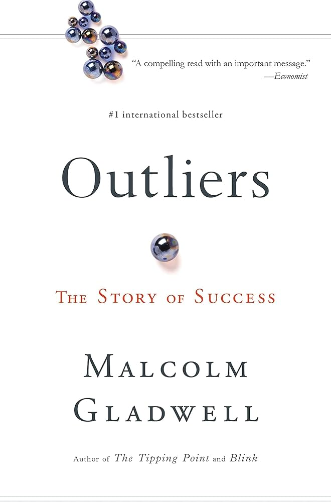

Ava Khossravi
"There is always light, if only we're brave enough to see it. If only we're brave enough to be it" - Amanda Gorman
About Me
Ava Khossravi is a high school senior at Canyon Crest Academy in San Diego, California. Ava was born in Durham, North Carolina and lived there for a few years before moving to San Diego. Ava has an older sister named Emily who also graduated from CCA and is a sophomore in college. In a few months, Ava will move to Boston in order to attend Harvard University. She loves the warm weather in San Diego and will definitely miss it!
Traveling
Ava loves visiting new places. Most recently, Ava visited New York City, which is her favorite place to visit in the country. Ava also enjoys traveling to Northern California (specifically San Francisco) where her grandma lives. She is excited about her upcoming trip to Orlando to attend Disney Dreamers Academy.

Books
Ava enjoys reading a wide variety of books with her favorite genre being nonfiction. Her favorite book is Outliers by Malcolm Gladwell. Other books by Gladwell that she enjoyed include Blink and Talking to Strangers. In school, she enjoyed reading The Great Gatsby and Frankenstein.
